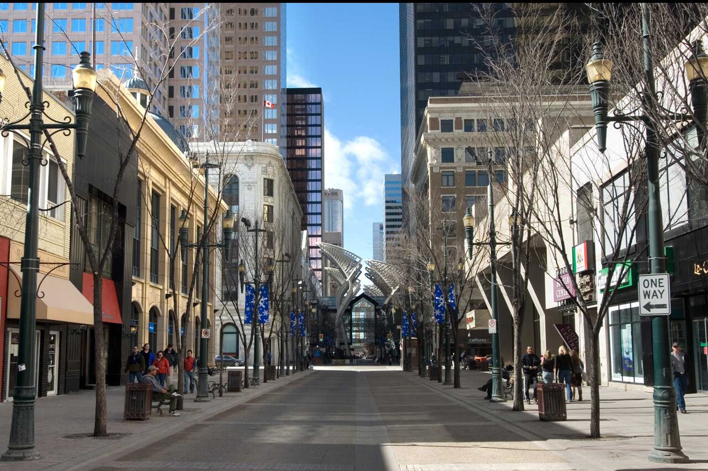
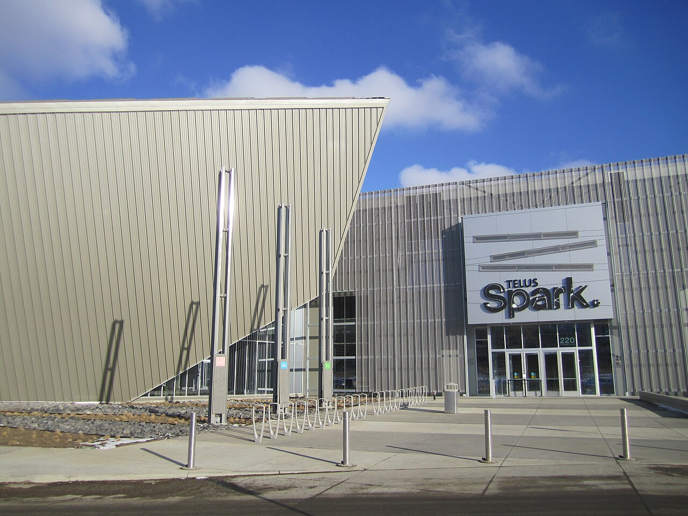
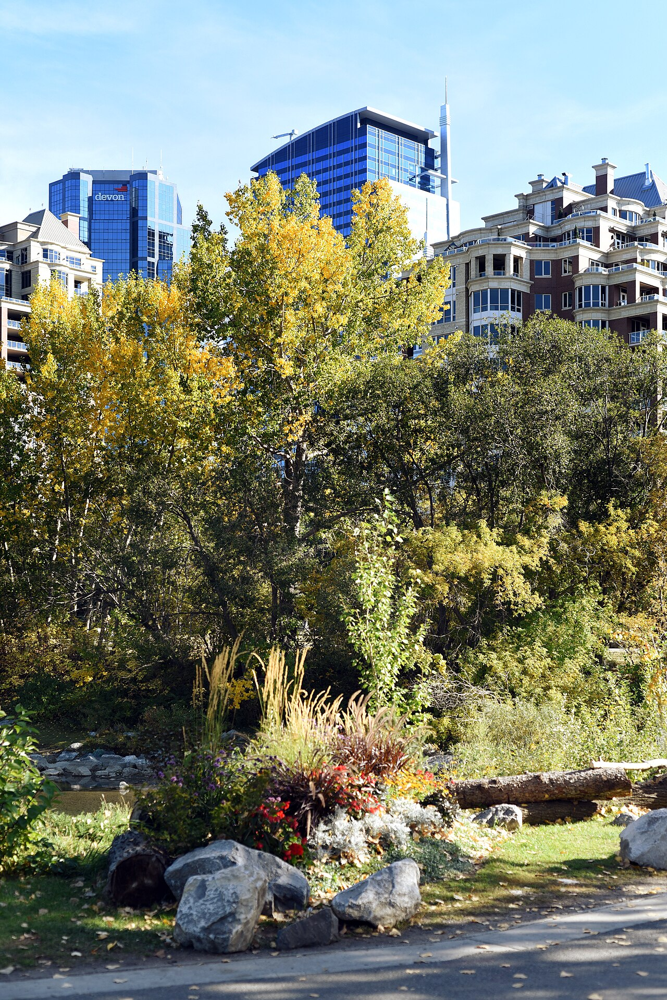
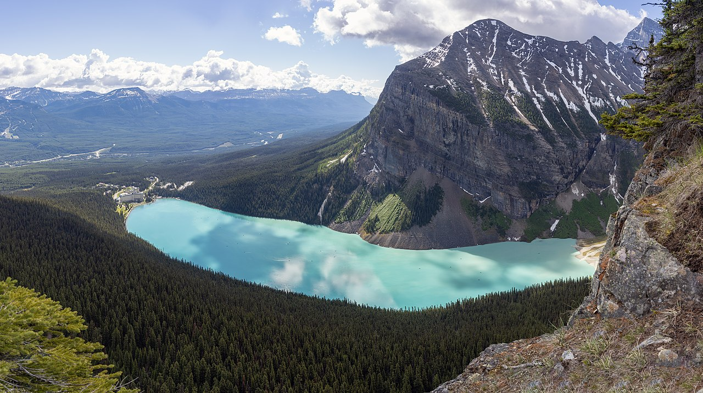
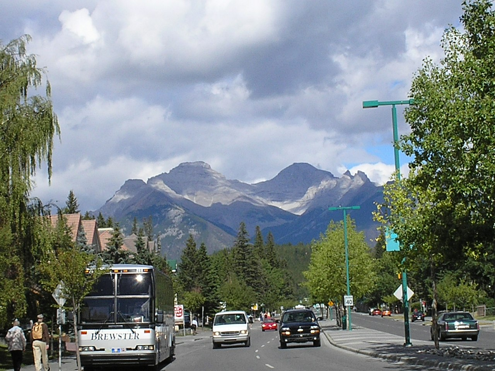

Calgary 旅遊行程 ・ PETS 2026
PETS 2026（7/20-25）Taylor Institute 主會場Banff hike7/24 HotPETs 或 Lake Louise7/25 WS133 飛 YVR
最新版重點：機票已訂好。Calgary 段固定到 7/25 晚上，Banff hike 後搭 WestJet WS133，21:55 YYC 起飛，22:35 抵達 YVR。舊版待討論路線已收斂為 7/25 當晚飛 YVR。
已訂航班
| 段 | 航班 | 時間 | Calgary 行程影響 |
|---|---|---|---|
| 台北 → 溫哥華 | 長榮 BR010 | 7/19 23:30 TPE T2 → 19:40 YVR M | 抵 YVR 後要快速轉機。 |
| YVR 轉機 | 1h35m | 19:40 → 21:15 | Trip.com 訂單頁明確提示：必須在 YVR 領取並重新託運行李。 |
| 溫哥華 → 卡爾加里 | 長榮 BR3094，由 Air Canada AC2072 營運 | 7/19 21:15 YVR M → 23:45 YYC | 抵達很晚，直接入住休息。 |
| 卡爾加里 → 溫哥華 | WestJet WS133 | 7/25 21:55 YYC → 22:35 YVR M | hike 回來後前往 YYC，當晚進 Vancouver 市區。 |
| 溫哥華 → 台北 | 長榮 BR009 | 7/28 02:00 YVR M → 7/29 04:50 TPE T2 | Calgary 段無影響，Vancouver 最後一晚去機場。 |
7/19 YVR 入境與轉機注意
現階段操作假設：在 YVR 依照「要提領行李並重新託運」來準備。Trip.com 訂單提示框寫明「您必須在溫哥華國際機場領取行李並重新託運」。
已查到的訂位與行李資訊
- Trip.com 訂單：訂位代碼與電子機票號已移除，請查私密文件。
- Air Canada Manage Booking 可用官方訂位資訊查到整段行程，顯示 Flight 1 為 TPE → YYC，中停 YVR 1h35m。
- Air Canada 行李頁顯示 TPE → YYC：第 1、2 件託運行李免費，每件 23kg / 158cm。
- EVA Manage Your Trip 可用官方訂位資訊查到訂位，顯示 Taipei to Calgary，一個 stop，BR010 + BR3094 operated by Air Canada。
- EVA baggage policy 顯示 TPE-YVR 與 YVR-YYC 兩段託運行李皆為 2 件、23kg。
抵達 YVR 後流程
- 下機後跟著 Arrivals / Canada Customs / Canada Connections / Domestic Connections 指示走。
- 先通過加拿大入境與海關；準備護照、eTA、後段登機證/行程、住宿資訊。
- 依 Trip.com 提示，預期要在 YVR 取托運行李，過海關後再交到 Air Canada connection baggage belt 或依現場指示重新託運。
- 之後前往國內線安檢與登機門。不要停留買東西，尤其不要買需再過安檢的液體。
- 若 TPE 行李牌目的地印到 YYC，仍要依 YVR 現場螢幕、地勤與轉機標示確認是否需要短暫提領。
轉機時間判斷：1h35m 高於 Air Canada 公布的 YVR 國際線轉加拿大國內線最低轉機時間 1h10m，但容錯不多。BR010 準點、Advance Declaration 已完成、文件在手、抵達後不繞路，是這段能順利銜接的關鍵。
ArriveCAN / Advance Declaration
- 在抵達加拿大前 72 小時內用 ArriveCAN 做 Advance CBSA Declaration，YVR 支援。
- 本班 7/19 19:40 抵達 YVR，最早可在 台灣時間 7/17 約 10:40 後填寫；太早填會超過 72 小時。
- 填寫資料：護照、抵達機場 YVR、航班 BR010、加拿大住宿地址、海關申報問題。
- 抵達 YVR 後到 kiosk / eGate 掃護照，叫出 declaration，確認或修改後送出，拿 receipt 給 CBSA 官員。
- Advance Declaration 不等於 eTA；加拿大 eTA 要另外先辦好。
登機前檢查
- TPE 報到時確認是否一次拿到 BR010 與 BR3094 / AC2072 兩段登機證。
- 看行李牌最終目的地是否為 YYC，並記下行李條號。
- 把護照、eTA、ArriveCAN confirmation、住宿地址、後段登機證放在隨身容易拿的位置。
- 托運行李內留足空間，若在 TPE 買免稅液體，YVR 可能需要重新安檢，務必能放入托運或避免購買。
主辦方郵件更新
| 項目 | 重點 | 行程處理 |
|---|---|---|
| 會場 | 多數活動在 Taylor Institute for Teaching and Learning（TI），UCalgary main campus。 | 校內住宿很方便；除 Gala 與 Banff hike 外，多數步行可達。 |
| 餐飲 | workshops 與 main conference 每天供應早餐、午餐、咖啡、飲料、點心。 | 白天不用另外排餐廳，晚餐再留給會議活動或牛排。 |
| 7/20 reception | 戶外草地 + atrium、food trucks 免費、cash bars、前一兩杯主辦方請。 | 改成必留，不排 Kensington 晚餐。 |
| 7/21 | Stampede-style pancake breakfast、welcome smudge、傍晚 Calgary surprise、第一場 rump。 | 建議完整參加會議日和晚上社交。 |
| 7/22 Gala | TELUS Spark Science Centre，含 dinner/drinks、恐龍展、Quantum Sandbox。 | 保留，交通由主辦方處理。 |
| 7/23 The Banquet | University District 的 The Banquet，第二場大型 rump，含 patio、食物、第一杯飲料、bowling、arcade、billiards。 | 優先於 Folk Fest，朋友/旅伴也可一起去但自付餐飲。 |
| 7/24 HotPETs | Village Ice Cream break，剛好遇到 YYC Ice Cream Fest。 | 若不去湖區，這天參加 HotPETs 很值得。 |
| 7/25 Banff | 等車時有 light breakfast/coffee，路上有 boxed lunch/snack；可 volunteer-guided hike 或自由逛 town/trails。 | hike 固定保留，晚上接 WS133 飛 YVR。 |
每日行程
7/19週日
抵達台北 → 溫哥華轉機 → 卡爾加里

行程
| 出發前 72h | 完成 ArriveCAN Advance Declaration，並確認加拿大 eTA 已核准。 |
| 23:30 | BR010 從 TPE T2 起飛；報到時確認行李牌、登機證與行李條號。 |
| 19:40 | 抵達 YVR M，開始短轉機。下機後直奔入境/轉機流程。 |
| YVR | 依 Trip.com 訂單提示，預期需要領取托運行李，過加拿大海關後重新託運/交到轉機行李帶，再通過國內線安檢。 |
| 21:15 | BR3094 / AC2072 從 YVR 起飛。 |
| 23:45 | 抵達 YYC，Uber/計程車進 University of Calgary 校內住宿，直接休息。 |
提示
- YVR 轉機 1h35m，Trip.com 訂單明確提示要領取並重新託運行李，抵達後不要停留。
- Air Canada / EVA 皆查得到 TPE → YYC 連續行程與行李額，但 YVR 現場仍以「要取行李再轉交」準備。
- 隨身帶好護照、eTA、ArriveCAN confirmation、住宿地址與後段登機證。
- 抵 Calgary 很晚，今天不排行程。
7/20週一
PR² + receptionPR² Workshop + PETS Opening Reception

行程
| 08:30-17:00 | PR² Policy-Relevant Privacy Research Workshop @ TI / UCalgary。 |
| 晚上 | PETS Opening Reception：戶外草地 + TI atrium，food trucks 免費，first drink or two included。 |
提示
- 這個 reception 主辦方特別強調，不是露個臉就走的類型。
- 晚餐不用另排，直接靠 food trucks + reception。
7/21週二
PETS Day 1PETS 開幕日 + Calgary 特色活動 + 第一場 rump

行程
| 早上 | 戶外 Stampede-style pancake breakfast + welcome smudge。 |
| 白天 | PETS Day 1 主議程。 |
| 傍晚 | 主辦方安排的 Calgary 特色驚喜。 |
| 晚上 | 第一場 rump session。 |
提示
- 這天社交密度高，不建議另外排 bar 或市區景點。
- 穿可走路的鞋，全天在校園和會場活動。
7/22週三
GalaPETS Day 2 + TELUS Spark Gala / Poster Session

行程
| 白天 | PETS Day 2 主議程。 |
| 晚間 | 主辦方接送至 TELUS Spark Science Centre：poster session、晚餐飲料、exhibits、Quantum Sandbox。 |
提示
- 晚宴等於順便逛科學館，晚上不要另外安排。
- 主辦方會 bus you，不需要自己解決交通。
7/23週四
The BanquetPETS Day 3 彈性 + The Banquet 大型 rump

行程
| 白天 | PETS Day 3，可依當天精神與議程取捨。 |
| 晚上 | The Banquet University District：第二場大型 rump + food + first round + bowling / billiards / arcade / trivia。 |
提示
- 這場是主辦方重點活動，建議把原本 Folk Fest 開幕改成備案。
- 如果有旅伴或 Calgary 朋友，也可以加入，但 guest 自付食物飲料。
7/24週五
二選一HotPETs + Village Ice Cream，或 Lake Louise + Moraine Lake


方案 B：Lake Louise + Moraine Lake tour
跳過 HotPETs，參加 Calgary 出發一日 tour。優點是把經典湖景補上；缺點是 7/24 湖區 + 7/25 hike 連兩天大自然，會累。
Moraine 地圖湖區交通提醒：Moraine Lake 不能自駕進入。若選湖區，建議直接訂 Calgary 出發的一日 tour，或很早搶 Parks Canada shuttle。
7/25週六
Banff hike + WS133PETS Banff Hike + 當晚飛 Vancouver

行程
| 早上 | 等 bus 時有 light breakfast + coffee。 |
| 白天 | Banff：volunteer-guided hikes 或自行探索小鎮與 trails；主辦方提供 boxed lunch/snack。 |
| 傍晚 | 回 Calgary / UCalgary，拿行李後前往 YYC。 |
| 21:55 | WestJet WS133 從 YYC 起飛。 |
| 22:35 | 抵達 YVR，進 Vancouver 市區飯店。 |
提示
- 今天不用自己處理 Banff 交通，但晚上要搭機，行李要提前整理好。
- hike 當天不要在 Banff 買太多重物。
- 抵 YVR 後可搭 Canada Line 或計程車進 Downtown。22:35 抵達仍有 Canada Line 可用。
7/25 轉場安排
| 時間 | 安排 | 提醒 |
|---|---|---|
| hike 前 | 大件行李先整理好，留一包 hike 小包。 | 晚上回來不要重新大整理。 |
| hike 後 | 回 UCalgary 拿行李，前往 YYC。 | 主辦方預估傍晚回來，銜接 21:55 航班很充裕。 |
| 21:55-22:35 | WS133 YYC → YVR。 | 已改為 YVR 進，機場到市區交通單純。 |
| 22:35 後 | YVR → Downtown Vancouver 飯店。 | Canada Line 最省事；若累就直接叫車。 |
主辦方提醒 + 打包注意
- 洋蔥式穿搭：Calgary 白天暖、晚上變涼，戶外 reception / The Banquet patio / Banff 都需要外套。
- 好走的鞋：校園、TELUS Spark、The Banquet、Banff 都會走路。
- 防曬：Calgary 海拔約 1,050m，山區太陽更強。
- 防蚊：主辦方說今年雨比較多、蚊子特別可怕，Banff hike 一定帶。
- 水壺：會議與 hike 都適合自備。
出發前待辦
- 確認加拿大 eTA 已核准，且護照資料與機票一致。
- 抵達加拿大前 72 小時內完成 ArriveCAN Advance Declaration：本班最早約台灣時間 7/17 10:40 後可填。
- 出發前 48 小時內辦理長榮 online check-in，確認是否能拿到 BR010 與 BR3094 / AC2072 兩段登機證。
- TPE 櫃台報到時確認行李牌最終目的地是否為 YYC，拍下行李條；YVR 仍以需要提領再轉交準備。
- 決定 7/24：HotPETs + Village Ice Cream，或 Lake Louise + Moraine Lake 一日 tour。
- 若選 7/24 湖區，先訂 Calgary 出發 tour 或設定 Parks Canada shuttle 搶票提醒。
- 訂 Vancouver Downtown 住宿 7/25-7/28 三晚，最後一晚紅眼前可回房整理。
- PETS 現場第一天確認 Banff hike 報名細節。
- 7/25 早上出門前把飛 Vancouver 的行李整理好。
- 準備防曬、防蚊、薄外套、好走鞋。
Calgary 段最新版：已套用已訂機票，並加入 7/19 YVR 入境轉機、行李重新託運與 ArriveCAN Advance Declaration 注意事項。